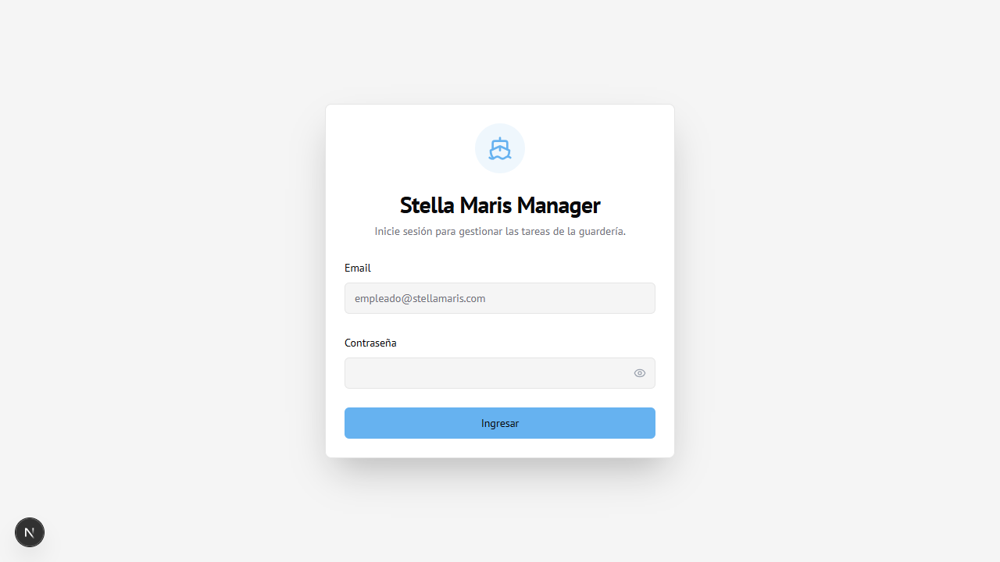

Módulo 01
Inicio de Sesión
Pantalla de acceso al sistema para todos los usuarios.
Pantalla de ingreso
Al abrir la aplicación se muestra la pantalla de login.

Cómo ingresar
- Ingresar el Email en el campo correspondiente
- Ingresar la Contraseña — el ícono del ojo permite mostrar u ocultar la contraseña
- Hacer clic en Ingresar
Redirección según rol
| Rol | Redirige a |
|---|---|
| Administrador | Dashboard |
| Empleado | Mis Tareas |
Notas importantes
Si la sesión ya está activa al entrar a la pantalla de login, se muestra el botón Cerrar Sesión para cambiar de usuario.
La contraseña inicial de cada empleado nuevo es: NombreDNI (ej:
Juan12345678). Se recomienda cambiarla desde Configuración.
Si las credenciales son incorrectas, aparece un mensaje de error en rojo debajo del formulario.